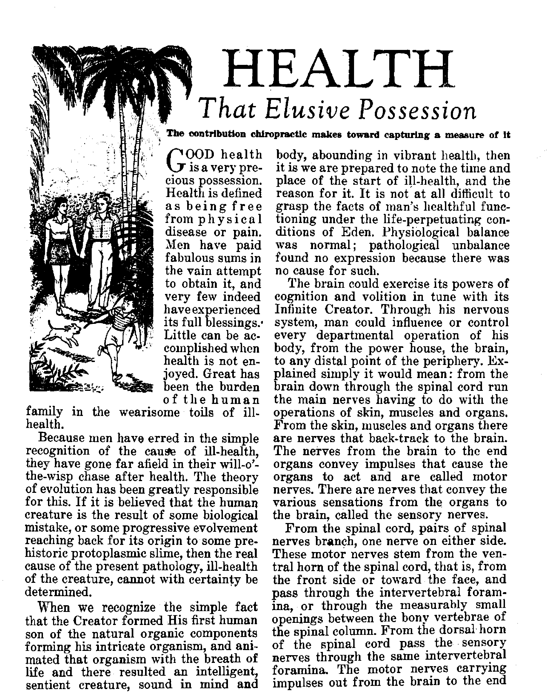
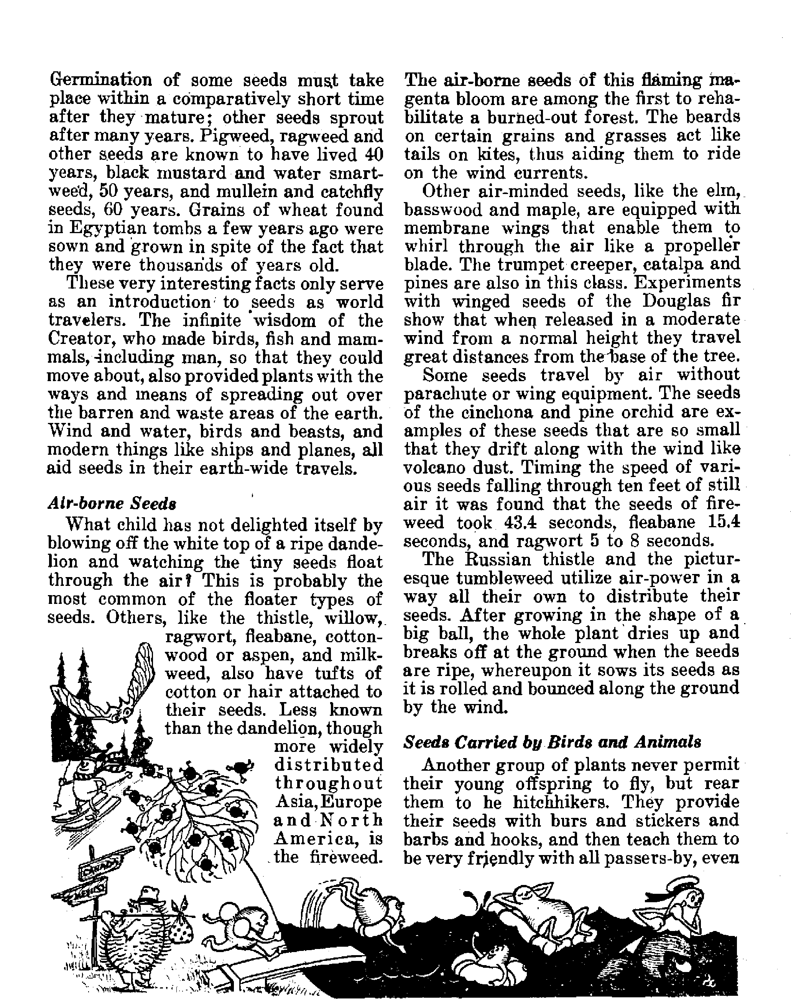
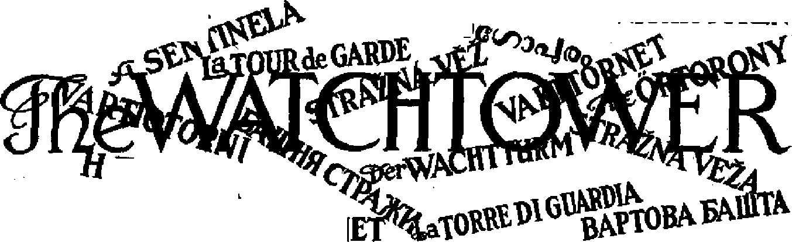

United Nations to grapple with clash of Jews and Arabs
Chiropractic contributes toward capturing it
They do get around, and by the most novel means!
THE MISSION OF THIS JOURNAL
News sources that are able to keep you awake to the vital issues of our times must be unfettered by censorship and selfish interests. “Awake 1° has no fetters. It recognizes facts, faces facts, is free to publish facts. It is not bound by political ambitions or obligations; it is unhampered by advertisers whose toes must not be trodden on; it is unprejudiced by traditional creeds. This Journal keeps itself free that it may speak freely to you. But it does not abuse its freedom. It maintains integrity to truth.
“Awake !’* uses the regular news channels, but Is not dependent on them. Its own correspondents are on all continents, in scores of nations. From the four corners of the earth their uncensored, on'■the" scenes reports com© to you through these columns. This journal’s viewpoint is not narrow, but is international. It is read in many nations, in many languages, by persons of all ages. Through its pages many fields of knowledge pass in review—-government, commerce, religion, history, geography, science, social conditions, natural wonders—why, its coverage is as broad as the earth and as high as the heavens.
“Awake I” pledges itself to righteous principles, to exposing hidden foes and subtle dangers, to championing freedom for all, to comforting mourners and strengthening those disheartened by the failures of a delinquent world, reflecting sure hope for the establishment of a righteous New World.
Get acquainted with “Awake I” Keep awake by reading “Awake!”
PUBLISHED SEUIMOXTULX By
WATCHTOWER BIBLE AND TRACT SOCIETY, INC, , 117 Adams Street Brooklyn 1, N. Y., U. S. A.
N. H. Knobs, President Grant Suiteb, Secretary
Five cents a copy One dollar a year
HeeilttMCH Ahould be sent to dDra In your country Id ccmpjjance with rBtutottona to EUtfantoe tile delfcry of money. Remittances art accepted at Brooklyn from ccun Iries where no office la located, by In Lemattonal money order only. Subscription rates In different countries are here stated in local currency, Notice of nglrettlM (wilb reaewd blank) ia sent at letrt two Ircuea before subscription eplrw.
Change of addran when sent to rar office may be expected effective within one month. Send your old as well as new address.
<une*g Yearly Subscription Rate
An erica, U.S., 11? Adams St., Brooklyn 1, N.Y, $1 AcrtraUa, 7 Beresford Rd., Str a th field. N.S.VV. 6s Canada, 40 Irwin Aye.r Toronto 5, Ontario $1 England, 34 Craven Terrace, London, 3 5s $B*th Africa, 333 Boston House, Cape Town 5s
Entered u BecaDd-daaa matter at Brooklyn, N. Y., Act of March 3, 1373. Printed to U, 8. A.
CONTENTS
Health, That Elusive Possession
Seeds Carried by Birds and Animals
. Seed Dispersal by Water and Ejection 14
Development of Modern-Day Buddhism 18
Religionists Circulate False Reports of So
viet Crack-down on Jehovah's witnesses 20
Turning On the Lights in China
“Thy Word Is Truth”
Making the Election of Oneself Sure 24
Venezuela Struggles to Cast Off Shackles 26
‘Now
high time to awake.—Romans 13:11
Brooklyn, N.Y., April 22, 1&47
Volume XXVIII
Number 8
Palestine’s Peace Problem Baffles the World
OT an exclusively Jewish, Arabic or British problem, the question of establishing peace in Palestine is a problem for the whole world to solve. Without waiting to be placed on the agenda of the United Nations this Palestine issue has forced itself into the public forum and has become one of the most heated disputes since European hostilities ended in 1945. Week after week the newspapers have carried full-page advertisements devoted to a discussion of the issue from various viewpoints. Private corporations, prominent individuals and various leagues and organizations have used the public press and radio in an effort to sway public opinion to their side of the controversy. Daily this rhetorical propaganda has been punctuated with reports of slayings, kidnapings, floggings, executions and bombings throughout the unholy land of Palestine. For centuries Palestine had been under Turkish rule until the League of Nations mandated it to Britain following World War I. From that date onward trouble in the land has multiplied. British rule has been centered in a high commissioner who was supposed to confer with Jewish and Arab representatives on domestic matters. In 1929 the League of Nations recognized the Jewish Agency as a representative of Jewish interests. Consisting of a 90-member executive committee, it was elected us a subsidiary by the World Zionist Organization. The
Vaad Leumi, or National Council, of 43 members was elected locally by the Jews of Palestine. Besides these two “official” groups there are others that give Jewish “advice” with 3 loud voice to the high commissioner: the Jewish Defense Army, called Hagana, and the two extremist factions, Irgun Zvai Leumi and the Stern Gang.
For many years the Arabs of Palestine were represented by the mufti of Jerusalem, Haj Amin el Husseini, but more recently the Arab Higher Commission has been recognized as the spokesman for the Arabs. Haj Amin’s followers work underground and are known as the Arab Najada.
When the British took over the mandate there were about seven or eight Arabs to every Jew in Palestine, but since then immigration under the Zionist Movement has made the population one-third Jewish. The Arabs were inflamed at this transformation, bloody riots broke out from time to time, and thousands of Jews and Arabs lost their lives. The British in the role of “police officer” found themselves in the middle of the struggle. The Jewish Agency, on the one hand, demanded a say not only in social, educational and economic matters, but also on the immigration question. The Arabs, on the other hand, exerted even greater pressure and forced the British to restrict Jewish immigration.
In 1939 the British set up a five-year immigration quota of 75,000 Jews, promising the country self-government within ten years. This latter issue was postponed by the war, but not the question of immigration. On April 1,1944, it was necessary to issue a White Paper on this subject. With the cessation of hostilities in 1945 the immigration issue burst into flame, and since then British diplomatic resourcefulness has been taxed to the limit to keep the whole country from blowing up as a great powder keg.
Postwar Palestine
The murdering of millions of Jews in Europe by Hitler's gang, and the postwar pogroms in Catholic countries like Poland, added fuel to the Palestine fire. Out of sympathy President Truman on August 31, 1945, called for admission of 100,000 Jews to Palestine, but instead of solving the problem it was like throwing another log on the fire. Opposition began to rise to a new high. An Anglo-American commission was sent to study the problem, and in the spring of 1946 it reported that not only 100,000 Jews should be admitted but also the land should be divided into Jewish and Arab territories. Britain refused to lift restrictions on immigration unless the United States would give military aid, a thing which the U, S. A. refused to do. Meantime violence from Jewish underground activity increased.
On July 22, 1946, Irgun extremists bombed the King David Hotel in Jerusalem, headquarters of the British army, leaving 79 killed and 29 missing. Twenty thousand British troops then raided Tel Aviv and captured caches of arms hidden in the great synagogue. On August 11 the British clamped down on all “illegal” entry into Palestine over the 1,500 monthly quota. Fire hoses and tear gas were used at Haifa on those that resisted transfer to Cyprus,
When the joint Anglo-Jewish-Arab conference met in London on Septem-her 9 in an effort to solve the difficulties the Palestine representatives of both the Jews and Arabs boycotted the assembly because they'said their prior demands bad not been met. During the first week the terrorists in Palestine made bigger headlines than the London conference. The second week the conference continued in the doldrums. The third week it reached an impasse, so finally, on October 2, it was adjourned until DecemT ber 16, which date was later pushed ahead a month.
Next the attention of the world was fixed on Switzerland. In the city of Basle, in December, 1946, the first postwar meeting of the World Zionist Congress met, with 367 delegates, from 61 countries, in attendance. They said they represented 2,500,000 Jews throughout the world, Barely they would find the answer to this problem. But, alas, their ranks were split. Some proposed “passive resistance” to British rule; others favored action. Some recommended bargaining with Britain for a portion of Palestine; others said nothing short of the full limits of Palestine's geographical boundaries should be accepted. What these miserable leaders of a sad people accomplished was very little.
In January of this year, when the joint Anglo-Jewish-Arab conference reconvened in London to discuss the setting up of semiautonomous states, violence again flared up in Palestine, but this time it brought a split in the British cabinet on wbat the next move would be. A Jewish yonth who had robbed a Jaffa bank was given 18 lashes and sentenced to 18 years. In reprisal three British soldiers and a major were kidnaped and given 18 lashes. Outraged public opinion in Britain cried out that Britain should either gelstough with the Jews and Arabs or pull out and turn the mandate over to the United Nations. More violence followed.
By the end of January the showdown seemed at hand after twenty-five years.
Palestine’s high commissioner ordered the decks cleared for action. Two thousand non-essential British families were ordered to leave; a bitter debate in the House of Commons followed, with Churchill bemoaning the “bloodshed, odium, trouble and expense” caused by British policy in Palestine. Great suspense followed. What would Britain do, declare martial law? Finally, on February 18, it was announced in the House of Commons that since Britain had exhausted every resource and every diplomatic trick, and still had failed to bring peace, it was decided to turn the whole matter over to the United*Nations for settlement. On February 25 Bevin claimed that this decision was necessary because Truman’s demand for admitting 100,000 Jews had wrecked amicable solution of the problem right when Britain was on the verge of a truce with the Zionists.
Manifestly there are three distinct viewpoints to the Palestine issue. British proposals are objectionable to the Jews and Arabs; Jewish ideologies are not suffered by the Arabs and British; Arab ambitions are rejected by the British and Jews. Around and around they have gone until the whole matter is back in the lap of a so-called United Nations “peacemaker”.
Like all the other nations of this old world, Britain first looks out for her own selfish interests. This is the yardstick with which she measures all Palestine proposals. Britain’s political and economic empire is no stronger than its weakest link; therefore, if she is to be a powerful force in the Far East she must maintain strong military bases in the Middle East along her “lifeline” for land, sea and air operations. Britain wants assurance that the flow of oil from the heart of Iraq will continue to reach her ships at Haifa rather than be pumped into oil-thirsty Russia. She thinks her best guarantee for this is a military fortress in the Middle East.
Britain is no longer able to administer her colonial “divide and rule” policy, and so she makes many compromises and concessions, holding on to as much as possible and giving as little as necessary. She is willing to set up a Federation of Jewish, Arab and British states, or to make Palestine a commonwealth like Canada and Australia. However, in both instances Britain would hold strategic bases that would make her a dominating power in that part of the world.
Since Britain’s 100,000 troops in Palestine are insufficient to enforce her decrees, she follows a policy of double conciliation. On the one hand, in dealing with riots and violence caused by the Jewish terrorists Britain is cautious in executing the perpetrators. On the other hand, Britain tries to give no offense to the Arabs. Jewish immigration is their sore spot, and so Britain tries to soothe and placate the Arabs by keeping Jewish infiltration at a minimum. With honeyed words Britain tells the Jews how kind she has been to them in allowing their numbers in Palestine to increase from a mere 80,000 in 1922 to 600,000 today. If Britain has failed to carry out all the terms of the mandate, why, that is because of the tension in the land over which she has no control. In straining relations with the Jews over the immigration question Britain tries to retain friendship with the world of 400,000,000 Moslems, and thus prevent the Arab camp from swinging into the Russian orbit.
The Arabs, having a different point of view of the Palestine picture, have opinions different from those of the British, and, let it be said, they hold to their beliefs rather tenaciously. The Arabs say they are not opposed to a democratic form of government in Palestine, in fact, that is their plan and ambition. Being in
the majority Palestine would become an Arab state like Egypt, Saudi Arabia, Yemen, Trans-Jordan, Syria and Iraq. The 33,000,000 Arabs in these countries also back this plan.
If this Arab dream is to come to life, then Jewish immigration must be stopped completely. Twenty-eight years ago Arabs outnumbered Jews 8 to 1; today the ratio is only 2 to 1. Arabs, therefore, have opposed both the admission of 100,000 and the 1,500 monthly quota, which they"tjall a Jewish wedge driven into the heart of the Arab world. The Arabs also want the British ousted from Palestine. The Jews, say they, are the troublemakers in the land, and that, since the British are not able to stop the trouble, they should turn the job over to the Arabs.
The Arabs' argument is that the land of Palestine belongs to those that are born on it. They quote Abraham Lincoln on this point. So, while the Arab is not opposed to the native Jews that are born there, they view any immigration without their consent as an “invasion", and therefore it is their “patriotic” duty to fight against such ''foreigners” The mandate privileges, they say, give Britain no more legal or moral right to take the land away from them than to give land in California to European Jews.
There is a more powerful reason than these “legal” arguments that persuades the Arab to fight for ‘his Palestine’, that is, his religious convictions. To them the land of Palestine is sacred. Their Koran says so, according to Sheik Dia-el-Din Khatib, who adds: “It is inconceivable to Muslims to bargain about or hand over the land the sanctity of which they have been ordered to keep.” Hence the head of the Arab Higher Commission, Jamal el Husseini, said that they will fight “to the last drop of our blood” to prevent Jews from entering.
When Jews say they are entitled to the land of Palestine because their forefathers possessed it three thousand years ago Arabs retort that their great-great-forefathers possessed the land long before the Jews went down into Egypt or invaded the land under the leadership of Joshua. Such is the inflexible and adamant mind of the Arab. And nothing, it seems, will change it.
The Jewish ‘Viewpoint
Against this combined might of British and Arab opinion the Jewish minority find themselves fighting—fighting, they say, for their rights, fighting for their life, fighting for a “homeland”. For nearly 1900 years wandering Jews have been on the trek, hounded, persecuted and driven from country to country in search of a haven of rest.
In recent yei*^B Jews have come to view Palestine as their only hope in this dark world. To them, Britain's attitude in refusing to give the Jews Palestine and to protect them against Arab retaliation is viewed as an open warfare designed to smash and brealc the hearts and hopes of these persecuted people. How can Jews be expected to consent to a division of the land when it is smaller than the state of Vermont, is arid, and would be o»ly adequate to support the Jewish population already there? Or how can the Jews consent to a democratic form of government of majority rule when they are only the minority in the land of Palestine? The Jews also reject any form of British rule that is neither Arab nor Jewish.
The key that will unlock an understanding of the Jewish mind on the Palestine issue is a comprehension of ' Zionism. Based on Theodore Herzl’s book, Judenstaat (The Jewish State), Zionism was launched in 1897, the purpose being “to create for the Jewish people a homeftin Palestine secured by public law”. Today there are said to be 2,500,000 followers of this movement.
A letter dated November 2, 1917, addressed to Lord Rothschild, contained what is commonly called the Balfour Declaration, which said, in part: “His Majesty’s Government view with favor the establishment in Palestine of a National Home for the Jewish people?’ While this Declaration is considered of importance in the outworking of Zionism, yet it is not the moving cause. The spiritual force that inspires Zionism is the belief by many that the Jews are God’s "chosen people” and therefore the Bible promises are to them only, Many actually believe that God’s promise to Abraham means that they will inherit a chunk of real estate in the Middle East.
*But how could that be? How could a people that are mixed up with this old world of Satan’s, that reject Christ the Messiah, that oppose Jehovah God’s Theocratic rule—how could they be the "chosen people” of God? Like their stonyhearted, non-repentant forefathers, this Bible-transgressing, T almud-keeping generation presumptuously attempts to by-pass Jehovah’s Messianic Kingdom and set up one of their own making in Palestine, which they think God will be forced to acknowledge and bless.
In the light of these facts it is apparent that the Zionist movement, having a religious fervor, really has political aims and ambitions. This religio-political organization is commonly thought of as a purely humanitarian movement that aims at 'rescuing millions of men, women and children from mass extermination’, from depression and persecution, and from anti-Semitism. If the 180,000 displaced Zionist Jews of Europe wanted to go to Palestine only to get away from ' the memories of the crematories and child-murderers, then they would gladly accept the hospitality and sanctuary of other nations like Santo Domingo and Australia, which have offered them a haven.
Not all Jews belong to the Zionist cult. There are many who do not approve of the bombing and tommy-gun methods, employed by the Palestine zealots, but who, nevertheless, think that a Jewish
<fhomeland” should be established as a protection against anti-Semitism. Other Jews, however, believe that the "homeland” idea is all wrong. They think that the Jew should remain in the country where he is born. With such a confusion of opinion is there anyone who is able to point out the correct solution to the Palestine problem?
The Only Solution to the Problem
Anti-Semitism did not originate with the Arabs, but is a creation of Western Catholicism. This will sound strange to the uninformed person who has only read of the pope’s audience with the "Grand Rabbi” of Jerusalem, and the advertised papal sheltering of Jewish children and refugees from persecution. Contrary, to this apparently benevolent attitude of the present pope, history tells of former "infallible” popes, like Innocent III, Innocent IV, Gregory IX, Eugenius IV, Paul IV, and Pius V, as well as the important Fourth Lateran Council of 1215 and the Council of Basle. All of these issued anti-Semitic decrees that became the very foundation upon which the anti-Semitism of Hitler, Mussolini, Franco, Tiso and Petain (all Catholics) was based. ’
Can it be that the policy of the papacy toward the Jews has changed in recent months, and that now, instead of open persecution, the Vatican is following a deep and sinister Jesuit polity to further anti-Semitism throughout the world in the years to come? Some say that the scheme is to set up a Jewish state and then in every land push a Jew-hating campaign with the cry: "Go to your own country!” Jews will do well not to Jean on this tricky Vatican staff.
What about the United Nations, will it solve the Palestine problem or will it also fail? The matter will not come before that international debating society before next fall, and then it may be years before a decision is reached. In the meantime the underground has promised that Palestine will continue as the scene of bombings and killings, notwithstanding the fact that the L500 per month immigration figure is raised. Also the flood of propaganda will continue to deluge the public; great preparations are being made to this end by all factions.
What, then, is the remedy, and how can a secure and lasting peace he established over the once Holy Land of Palestine? Conversion of the inhabitants to .Catholicism or Protestantism is not the answer, as some have said, for then Palestine would suffer the same loathsome disease that plagues Christendom. If 100,000 Jews are admitted, will that end the trouble and result in peace ? Absolutely not! Supposing the Jews are given a national state of their own, even the whole of Palestine, then their peace would be no more enduring or lasting than the peace of this world. Honest Jews and Arabs who love righteousness will pin their hope on Jehovah God's Theocratic Government as the only solution to the Palestine problem. But the masses of peoples of earth show.no inclination of gravitating toward this only true solution to the problems of disunity and strife that plague the world. They have open to their view the centuries of failures recorded iri the history of government by imperfect men, but they stubbornly refuse to see the obvious inability of men to rule themselves. Generation after generation, they plod stupidly on through failure after failure. This blind world will continue baffled till its end.
May Day and Its Origin
TODAY the. first day of May is not much more than a springtime frolicking of school children. In the beginning, and up to the seventeenth century, it was diSerent. Worshiping the breaking forth of life in the earth those ancient people unleashed their own emotions and passions in a wild profusion of licentiousness,
Many authorities say that the licentious May Day practices go back to the Roman flower festival, the Flo ratio. The Druidp also celebrated May 1 with the Beltein (Beltine or Bealtine, meaning “Baal's Fire”), It was a feast to the Baal mentioned in the Bible,
And from where did the Maypole comet Some authorities believe that the eustoms of the May Day festival are much older than the Romans and Druids, and really “find their origin io the phallic, festivals of India and Egypt when the renewal of the fertility of nature in the spring was celebrated. The May pole is said to be a phallic symbol”. (American Book of page 241) “The Maypole itself is a phallic emblem,
the word cpdAAos [phallos] meaning primarily ‘a pole',” (Curiosities of Popular Customs, Walsh, page 692) Webster’s .Vett; International Dictionary says that this phallus is “a symbol of the male organ of generation, esp. as used in the Dionysian mysteries and in similar ancient and primitive ceremonies”.
This, then, is the badic meaning and origin of the Maypole, No wonder Stuhbes in his Afjafomw of Abases, published in 1583, called the Maypolo a /fstinckying idol”. Even as late as the seventeenth century, uAccording to the puritanical moralists, it was the custom for the youths of both sexes to go into the fields and woods on May eve, and remain out all night.” (Chambers’ Book of Days) There seems to be no connection between this paganism aud the selection in 1989 of May 1 as International Labor Day.
organs in the body are called efferent nerves. The sensory nerves conveying sensations from the organs to the brain are called afferent nerves.
With proper light, air, water and food such as existed in Eden at the time of man's primal innocence, physiological balance throughout the nervous system was maintained. Every perfect organ responded in perfect rhythm to the dictates of the perfectly functioning hrain; health resulted. Had the creature responded faithfully to the righteous commands of his Creator, this healthful balance would have been preserved; endless life would have resulted. ‘My son, attend to my words, incline your ear to my sayings; let them not slip from your eyes, keep them fixed in your mind; for they are life to those who find them, health to all their flesh?'—Proverbs 4:20-22, An American Translation.
Man's disobedience to the divine law resulted in his loss of Eden's healthful vicissitudes and in his being thrust out to battle the, cursed ground with its thorns and thistles. Unbalance of mind preceded unbalance of physical function, pathology resulted, with its long weary train of century upon century of disease and ill health. Many methods of combating disease have been devised, some extremely complicated, such as allopathy and homeopathy; other methods less complicated have found many sincere devotees. Of the less complicated and perhaps the most simple is chiropractic. The very simplicity of this latter adjunct to health has caused many people to thrust it aside as unworthy.
The Scriptural viewpoint, hence the sane viewpoint, is that perfect health cannot be gained, through any System of therapeutics until the kingdom of God under Christ Jesus lifts man from under the penalty of death incurred by Adam. Until then, that system which in its application approaches more nearly to the natural functioning of the organism should surely bring beneficial resuits. While all systems in their measure have done much good, yet chiropractic, when scientifically and honestly applied, has produced more than its quota of beneficial results. There is nothing mystical nor unduly complicated in this system of therapeutics. Chiropractic means the system of adjusting the joints of the spine by means of the hands.
It is frequent that from one cause or another disturbances in the relationship of one vertebra with another take place. These physical disturbances are called subluxations. Such disturbances cause physical changes in th$ size and shape of the intervertebral foramina, that is, the-openings between the two adjoining surfaces of the vertebrae or spinal joints. This change in size and shape frequently means reduction of the opening and consequent pressure upon the nerves finding exit and entrance through that certain opening or foramen.
With a condition as here described, there is always some systemic disturbance remote from the point of subluxation. In actual practice, over mwny years, in hundreds of thousands of cases, it has been found^nd proved that when under accurate and competent hands proper adjustment of vertebral displacement has been made such adjustment or adjustments gradually restore the normal size and shape of the intervertebral foramen, thus removing the undue pressure from the nerves at that point, relieving the embarrassment to the end organs, which end organs depend in considerable measure for tbeir nerve stimuli upon the free flow of energy through the efferent and afferent nerves of the central nervous system. The existence of nerve energy, or as it is now clearly proved to be, bio-electrical energy, in the field of biological research is attracting more attention than any other single physiological phenomenon.
The smallest unit of all organisms within the human body is the cell. Each cell is a bipolar organism containing a
comparatively acid (positive) nucleus and a comparatively alkaline (negative)* cytoplasm. Thus, each cell carries a standing potential and this potential is vital to the normal function of the cell. When the potential of any organ or tissue reaches the zero point that organ or tissue is dead. The maintenance of the electrical potential within the cells of the body, and the free flow of that energy as each group of cells is called into organic action, is what we call physical health. It can thus be readily seen that any impedance to that free flow of electrical energy would tend to create an unbalance in the electrical potential of the cell and hence the dis-ease of that part of the body.
The human body can be likened to a transformer and utilizer of energy. The anatomy of the nervous system in many respects parallels that of electrical systems ; the difference being that the electrical system carries volts and amperes in the hundreds and thousands and bioelectrical energy is in the nature of a thousandth part of a volt or ampere. Very precise micro-volt meters have been invented and are in use in the research laboratories of such universities as Yale, University of Chicago, University of Iowa, of sufficient sensitivity and accuracy to be able to measure the flow of electrical energies throughout the nervous system. The electrical phenomena of nerves, proved by scientists entirely outside the realm of chiropractic, form the basis for the claims of chiropractic. Interference in the free flow of bio-electric energy from the power house, the brain, to the cell or cells, disturbs the balance of bio-electrical poten-* tial in the latter and its resultant disease. Physical impingement of one or more of the spinal nerves at the intervertebral foramina is sufficient to disturb that free flow of bio-electrical energy and to cause bodily dysfunction. Removal of that impingement by skillful adjustment has proved, beyond peradventure in many thousands of cases, of inestimable assistance in restoring the bio-electrical potential of the cells previously affected and hence the healthful bodily function.
The presence of pain and muscular contraction at the point or points of impingement can be easily detected, but the degree of subluxation, the exact juxtaposition of one vertebra to another, cannot with surety be determined with the hands. The unwise claims of many chiropractors of their ability to accurately palpate subluxations has led many to lose confidence in the science. Results on the part of such practitioners have proved disappointing to so many of their patients who might otherwise have been helped. Malformation of the bony structure of the various bones of the spine, and which malformation may play no part in the immediate subluxation, can be seen only when the X-ray picture is used. Even with a carefully taken spino-graph it requires intelligent and experienced practice to determine all the various factors before effective adjustment can be made. There are comparatively few chiropractors so equipped.
Where such care and preparation form part of the chiropractor’s procedure, then it can be truthfully said, without going into wearisome argument, that even without presuming to diagnose, prognose or scientifically explain the pathology of the case, chiropractic has brought very great relief to very many people, who have thus been given an increased measure of health no other system they have tried afforded.
But it must be remembered that while this helpful method of restoring its measure of health covers a wide field of common maladies, it is by no means a cure-all. The only cure-all will be the incoming kingdom of God under His Great Physician, Christ Jesus. “But for you who revere my name, there will arise the sun of righteousness, with healing in its wings."—Malachi 4: 2, An Amer. Trans.
SEEDS
Are Ingenious Tr
EUROPE’S bomb-blasted areas have been subjected to a new and different air-borne invasion. Millions of seeds flew in on the wind and bailed out in a manner not dissimilar to paratroop tactics. However, this method of seed dispersion is not a twentieth-century innovation modeled after human military maneuvers. Long before men walked upon this globe the great Creator provided for a proper and equitable dissemination of life-bearing seed, each after its kind and in its order. His decree went forth: 'Let the earth bring forth grass, the herb yielding seed, and the fruit tree yielding fruit after his kind, whose seed is in itself, upon the earth: and it was so.” (Genesis 1:11) Hence it is that in the wake of wars and forest tires of destruction a green mantle of grass and trees, together with multicolored flowers, spreads over and hides the scorched and blackened earth.
Plants that bear seed, and there are about 100,000 kinds, are of the highest order of vegetable creation. Seeds of such plants as the pines, spruces, cedars, firs and cypresses are said to be "naked” seeds inasmuch as the pollen is laid directly upon the, seeds. There are only about 500 plants in this class, the balance of the 100,000 having their seeds enclosed in pods, shells or fleshy parts known as pericarps, which fact has caused some confusion as to what is the fruit and what is the seed.
The sizes and shapes of seeds are as numerous as the plants themselves, with no relation between the seed’s size and the ptent it produces. Elms and cottonwood trees are as large as oaks and walnuts, yet their seeds are much smaller. The largest pine nuts are produced by a
stunted tree of 15 to 20 feet in height, while the seeds of the C alif ornia Big Trees, which are the most mammoth things living, are only about an eighth of an inch long. Their cousins, the Coastal Redwoods, have seeds only half this size. On the other hand, the seeds of a palm tree on the Seychelles islands in the Indian ocean are the largest in the world, being, the size of footballs. The pods of a woody climber found in Australia and the West Indies are several inches thick and from two to four feet long. But the seeds of the petunia, pink, portulaca and potato are much smaller than the proverbial mustard seed. Some petunia seeds ate so small that they can be sifted through a screen having 1,600 openings to the square inch, and 200,000 of them weigh only an ounce. More precious than they sell for $1,000 a pound. Concerning the mistletoe, Science News Letter says: “Seeds of the mistletoe are so small and so well hidden by the sticky flesh of the berries that the Druids, to whom the plant was sacred, thought that it had no seeds at all, and considered its propagation to be supernatural.” Some plants produce but a single seed, while a single pod of the poppy has 30,000 seeds.
Many plants sprout from seed, grow, flower and produce seed in the matter of a few weeks or months; others take thirty years before they begin to flower, and another ten years to mature their seed.
to the point of attaching themselves to the fur and clothing of strangers and going along with them in their travels. Those who have combed the cockleburs out of a horse's tail or a dog's fur are all too familiar with the tenacity with which these seeds hold on. In different parts of the world these over-friendly* travelers $re commonly known by such names as beggar's lice, shepherd's needle, Venus's-comb, shepherd's purse, pick-purse, mother's-heart, Spanish-needle and dev-il’s-pitchfork.
The quince, squirting cucumber and desert mistletoe have seeds that are coated with an adhesive mucilage that not only permits them to stick to anirndl fur but also enables them to adhere to soil that is carried by the feet of animals^ Then there are other seeds that are devoid of hurs and sticky substances, and yet are carried by animals. The smooth acorns which squirrels hide away for a rainy day are an example, for some of these are forgotten and take root.
Birds are probably as instrumental in aiding seeds to travel as are the four-footed animals. With the fruits and berries they eat birds consume many seeds that pass through their digestive tract and are deposited with their droppings. Seeds subjected to this abrasive action of the digestive tract are more likely to germinate, according to W. G. Swank, of the University of West Virginia. He found that 70 percent of poison sumac seeds eaten by ring-necked pheasants sprouted, to compare with 20 percent of untreated seeds. Strange as it may seem, birds are able to eat and distribute poisonous seeds of the hemlock, yew, poison ivy and castor plant without any ill effects.
The all-surpassing wisdom of the Creator in providing for this marvelous distribution also placed safeguards against premature plucking of the seeds. They are imbedded in coverings or pericarps that are bard and unattractive when the seeds are green, but which upon ripening become soft and sweet, and catchy to the eye.
Seed Dispersal by Water and Ejection
Aquatic plants like water lilies have their seeds ingeniously encased in an aril having an air chamber that gives buoyancy. Not only do these seeds float considerable distances, but some of them become enmeshed in the feathers of water fowls and are transported to other bodies of water, toll-free. The western hladdernut of California and the Kentucky “coffee-tree”, which grow along the hanks of rivers, have inflated pods for their seeds that permit them to travel down stream when mature.
These seeds, however, are all landlubbers compared with the nautichl, Molucca beans., sea Deans, nicker nuts or bouduc seeds. Such tropical sailers 4>f the high seas have shells as-hard as iron and are able to ehdure months and years of travel covering thousands of miles. The East Indian mulberry, or al-tree, and the seeds of the cocoa palm, wash ashore on distant islands, where they take root.
The same great and ail-wise Designer of these travelers, who arranged that once the flowers are fertilized the calyxes close up to protect the growing seeds from wind and rain until they are fully ripe, also provided many clever and ingenious ways in which the forces of pressure and collapse are used to open the pods and expel the seeds: Phlox pods burst and “touch-me-nots” collapse, while those of the jewelweed collapse with the slightest touch and throw their seeds out by a coil-spring action.
When the seeds are growing the green pods continue to stretch until suddenly the process is reversed and the pods dry and contract and snap open with such force that the seeds are literally catapulted out with violence. Witch-hazel seeds are thrown a distance of thirty or forty feet. Some members of the nettle family pinch their seeds out; the Vir-
ginia smartweed develops a pressure on the bottom of the seeds. Vetches, furze, wild beans and sweetpeas expel their seeds by an elastic twisting of the pods into the shape of coil springs. A sudden contraction of the pod valves of the Para rubber tree shoots their seeds out. The principle of the slingshot is used by the wild chervil in casting away its seeds. Likewise the columbine swings its seeds away when the tension is released. When the capsules of the sandbox tree of tropical America hurst they sound like the report of a pistol shot, awakening the monkeys, who scamper after the seeds. Hence the natives call them “monkey dinner-bells”.
And there are many other mechanical principles employed by plants in releasing their seeds at the proper time. When the crossed stems and opposing valves of the waterwillow are split apart the seeds are hurled into the air. Pansy violet pods split into three valves, with each in turn exerting a pinching pressure until the seeds are finally cast forth. The toothwort and spring-cress have valves that roll up from the bottom, and the wild geranium holds its seeds in pockets until they are dry enough to be cast over the top of the pod. The most complicated of all is the wood-sorrel, with its seed coat turning inside out.
The very unique means employed by the squirting cucumber to expel its seeds is one of hydraulics. In the center of the pod with the growing seeds is a thick juice. The outer skin is hard, and instead of stretching outwardly as it grows the skin becomes thicker inwardly, and, as a consequence, the fluid center develops a great pressure. When the seeds are fully ripe the pressure is great enough to blow the stem out like the stopper of a bottle, and with the stopper the seeds and all are shot out with great force.
Some seeds are sown as soon as they are ripe, the cottonwood in the spring and the dandelion and thistle in the summer. Others are canny enough to tenaciously hang on until they can take advantage of the strong winds in the dead of winter. Long after the leaves are gone seed balls may be seen on the sycamore trees, and milkweed pods opening in the wintertime are not an uncommon sight, either. Other plants, like the jimsonweed or teasel head, split their pods only part way open, spill some of the ripe seed, and then retain the rest until they can be shaken out by strong winter winds. Such seeds falling upon glazed ice may travel for miles skiing down hills and skating over dales until they find a secure spot to take up homesteading.
Seeds indeed get around in their travels, taking advantage of many vehicles of transportation. And who designed these seed travelers? Who made the parachutes for the seeds of the fireweed, or rosebay willow herb, known in Europe as the “blitzweed”? These seeds have long hairs that open up wide in dry air and are thus carried over dry areas. But when they are blown into a moist air, indicating that the earth below will sustain life, these hairs fold up and permit the seeds to settle to earth. Whose wisdom provided for this? The infinite variety in designs, shapes and sizes of seeds, each for its own special mode of travel, not only answers the question but speaks of the glory and majesty of the Creator, Jehovah God, who has decreed: “While the earth remaineth, seedtime and harvest . . . shall not cease.”
Living Uf? to ^is T^ame
C Down in West Virginia there is a penitentiary that has a warden that has a name that has a ring of fitness for one of such a profession. It is M E. Ketchum.
NTIQUITY and popularity have often been held out as proofs positive that a particular religion is of divine origin, on the basis that only that which is right can endure the test of the ages and continue to find acceptance with the masses. If this be true, then we would have to accept the divineness of Buddhism, since it was more than twenty-six hundred years ago that Siddhartha Gautama rose from under a bo tree with the “enlightenment” that made him the Buddha; and his list of five original disciples has expanded to the embracing of' more than 450,000,000 followers. Buddhism’s appeal is release from an environment that leaves little to live for. Buddhism is a religion of escape.
Siddhartha Gautama was the son of a Hindu raja who ruled in Kapilavastu where the towering heights of the Himalayas descend to meet the plains of northern India. Born in this regal setting about 563 B,C., he was raised in a splendor that many envy but few attain. If we ate to believe the report, he took full advantage of the luxury that was his; for a time came wheu the people of the land complained that their prince lived entirely for pleasure without learning
the Philosopher God
anything and so would not be a fit leader when the old raja should pass away. Indignant at such a report, Gautama accepted it as a challenge and straightway set a day for trial of prowess. To the amazement of all concerned, he not only defeated all in manly exercise but also surpassed his own teachers in knowledge^ From this - one might deduce that Gautama was onw of those rare individuals to whorb every accomplishment comes with but little effort. Such people become bored quickly and soon find nd pleasure in ordinary pursuits; wo perhaps that spurred Gautama on in his attempt to fathom the mystery of life.
One day he observed a man utterly broken down by the ravages of old age. Shortly thereafter he saw another Totting away with a loathsome disease. This was climaxed by his view of a decomposing corpse. Then he saw an ascetic walking along in a calm and dignified manner as though nothing in the world mattered, and this despite his obvious lack of food and other things that might be termed desirable. That did it. Off went Gautaeia, •' forsaking family and position, in his quest for an explanation of life. First he sought the guidance of the wisest Brahman priests, but with no satisfaction. He devoted himself to a solitary and contemplative life filled with rigor-existed on so little food that the imprint he made when he sat in the sand was almost indistinguishable from the hoof mark of a camel. But this was not the answer. Enlightenment did not come. He took nourishment and determined to sit under the branches of a bo tree and meditate until all would be made clear. For forty-nine days he sat in silent med-
itation, and suddenly on that forty-ninth day the veil was removed from his mind. The secret of the world and the right path lay as an open book before him; he became the Buddha^
Basically, what Gautama brought forth was nothing new. One finds his doctrine closely linked to that which had always been the predominant philosophy and religion of India. The Indian way of thinking does not give cognizance to a personal god, but the emphasis is placed on an impersonal power, while existence is construed to be a spiritual principle restrained in a body of matter, this restraint resulting in misery. The suffering of the body is proof that the spiritual principle is under the dominion of the fleshly body, and there is always the desire for deliverance. But death is not the answer, for this spiritual principle continues to be, in a never-ending passage from body to body. The type of reincarnation and the amount of suffering to be endured were governed by the course a man had taken, not the judgment of a divinity but rather an unchangeable law of nature.
For release from this condition two schools of thought were presented. The first preached enlightenment and maintained that when one realizes life is essentially evil and the result of this spiritual principle restrained in matter, then the natural law of cause and effect is broken and the principle finds release. The other, which has been given much publicity in recent years, is Yoga, a system of physical and mental exercise designed to surmount the ordinary mental level and give way to sensations of happiness and peace even though the actual suffering continues.
Now that Gautama, was the Buddha {Buddha is a title meaning “enlightened one”, and not a name), he brought forth a philosophy which is found to be an enlargement on the first of the two previ-A.PRIL 22, 1947
ous schools of thought mentioned. He conceded that existence is suffering. He maintained that suffering is manifested in three aspects which are present in all existence. The first is sorrow, and includes all painful experiences; but these are really symptoms of the second, transitoriness, the fact that all things are temporary and must pass away. Since a true existence could not perish, all that appears to be is unreal; and thus the third factor is unreality.
But man in his blindness thinks that this unreality is a permanent thing and allows himself to become engrossed in it. He struggles and strives to possess and enjoy things, unaware that they are merely illusions. In this constant endeavor to grasp things that do not exist there is contradiction which the subconscious mind senses, causing the man to experience over and over again the suffering inherent in life. That which is hoped for is never attained; what apparently has been gained is an unexpected emptiness. Full of unrest, man dies, finishing this life only to be brought forth in another filled with the same discontent.
t
But this does not mean that Buddha believed in an immortal soul- What he did advocate was the law of Karma: that all existence is suffering through an endless succession of lives under an inflexible law of cause and effect. The conduct of an individual in one existence was a causative factor for the next existence with its greater or less degree of suffering. Buddha did not believe, however, that such chain of miserable existence was the manifested justice of a supreme power. His philosophy had no room for such a power. But as to just how this cause-effect relationship could run along from life to life without an external force of some sort, Buddha was most evasive; and we find ourselves face to face with the most obscure point in all his ohscure teaching.
Yet man was not doomed to forever circle the endless chain of Karma; await-
irig his discovery was a path of escape* First must come the realization that desire for the things of the world is a thirst that must be suppressed. When man has learned the truth about the world, and when the urge for its seeming pleasures is removed, his life has no further causal properties and cannot result in another life* Therefore Nirvana ie attained/ The word means extinction of the flame of desire, though it does not necessarily coincide with death. But when a man dies having reached Nirvana there is no reincarnation; deliverance has been foundt So impressed was Buddha with the omnipresence of suffering that complete non-existence presented itself as a haven.
The final goal of Nirvana was to be reached by what Buddha termed the “middle path”, avoiding in one direction the extreme of devotion to enjoyment, and in the other direction, complete asceticism. The first equipment needed was understanding, which called for a comprehensive study of all the doctrine that Gautama brought forth. Next was strict adherence to all moral precepts in order to bring one into the proper physical and mental state. And finally came the practice of meditation and concentration that the bonds of existence might be broken, spiritual exercises to fill the mind with the realization that all things perish and that the body is a loathsome thing, that the mind should be completely separated from self. All was summed up in the eightfold path of right belief, right purpose, right speech, right behavior, right occupation, right endeavor, right contemplation and right concentration.
But how could one become so equipped when surrounded by the world's distractions and temptations i The only answer was the monastic life, and monasteries were brought forth in profusion. The dwellings were simple and the life was rigid, with shaved heads, plain garments, and bread to be attained only by begging. Nunneries Buddha approved reluctantly at the insistence of his convert aunt. Full deliverance from life was possible only for the members of a monastery; but those of the laity could by good deeds obtain a somewhat favorable reincarnation that would place them in a better, position to take the necessary steps leading to Nirvana.
Development of Modern-Day Buddhism
But the ordinary man fCund no ap peal in the doctrine of Gautama. Its call went out to the philosophers and dabblers in metaphysics, those who thought that the common problems of the day were not worthy of their intellectual effort. The masses, wearied by their struggle for. existence, longed for something more concrete. They sensed the presence of an invisible power and wanted to give expression to their belief in this power; and they longed for a life of eternal bliss. The teachings of Gautama did not satisfy their needs. He recognized no deity, had no form of worship, offered no future life, and had no use for prayer. As missionaries went forth they realized this Jack of appeal, and gradually made concessions to the desires, of the people. Thus a new form of Buddhism took shape. It is known to this day as Maha* yana, meaning great vehicle, because it opened the way of salvation to the masses. The old school, known as Hinayana, continued the basic teachings of Gautama.
It developed that the earthly Buddha' ‘had come forth from a previously unknown existence in eternity'; and gradually this belief grew into die recognition of a trinity god, the Trifcaya, or “triple body"'. Now that a god existed, the way was opened for ushering in a sainthood. It seems that many of the faithful had lived properly and were ready to enter the dignity of Buddha and Nirvana; but they observed the misery and suffering of the world, and were deeply touched. They wanted to remain in a position where they could be of help,
and therefore willingly gave up Nirvana, dwelling instead in heaven, enthroned in glory. Here they could look down upon the suffering ones and render assistance. On many occasions they would leave heaven and appear on earth in various incarnations to help someone; and legion are the legends of their good deeds. The development of this saint class proved most convenient in the winning of converts who had worshiped another “god”; for all that was necessary was to make their “god” a saint in the Buddhistic order of things. Even today it is possible to trace out the origin of many of these saints, or Bodhisattvas, as the Buddhists call them.
A more positive kind of hereafter became a reality, a heaven where those who had done good could dwell forever, a heaven ruled by Buddhas and saints and which could be entered only by the exercise of faith in both. This called for outward expression through prayers, which prayers took a stereotyped form and were repeated over and over again. A handy device for the repeating of prayer was a string of eighteen beads, a rosary on which the faithful counted their prayers. A mode of worship took form also and grew to luxurious proportions. The monks became priests and conducted elaborate rites with numerous celebrations held in honor of the various saints. Temples sprang forth in abundance, and were filled with many images and altars adorned with lighted candles.
Another practice which became quite popular was that of collecting holy relics. Many are the tales concerning these relics, and some of them prove quite humorous. Probably if all the teeth of Gautama were counted up it would total a ridiculous figure, but it is explained away quite readily. A powerful king of Burma, with the misapplied zeal typical of recent converts, began an aggressive campaign to gather holy relics. It came to his attention that in Ceylon rested one that was most sacred, nothing less than a tooth of Gautama. The weaker king of Ceylon, un-desirous of parting with his priceless possession but fearful of arousing the ire of so great a king, expressed the wish that he might have two of such teeth; and before he finished speaking the sacred bicuspid had reproduced itself. The two teeth could not be told apart except that the original jumped up and down and performed miracles. When the king of Burma received his treasure he decided to find a favorable location for its enshrinement by putting it on the back of a white elephant and building a temple wherever the animal would stop. But the elephant did wrong by the good king and stopped at a place remote from the royal palace. In utter disappointment the king expressed his regret that he did not have two teeth. You guessed it—another tooth appeared, and off went the elephant once more. Five times this happened before the huge animal co-operated by stopping at a favorable place. It seems a pity that the Vatican did not think of an explanation like this first. It could have been well used to account for the existence of the several holy shrouds, despite the fact that Jesus was buried in only one.
As a result of all these outgrowths the ideology of Buddhism had changed drastically. No longer was the emphasis on complete separation from the things of the world, but, instead, on facing the world and fighting the forces of evil by self-sacrifice. Those natural desires summed up as thirst by Gautama were no longer considered loathsome; it was only their selfish use that was to be abhorred. Now possessing an appeal to the people, it could be expected that Buddhism would grow. And grow it did over a generous portion of the Oriental world.
It spread through Ceylon and was carried by traders to Burma and Cambodia,
to Siam, and the East Indian islands. It pervaded China and overflowed to Korea. A Korean visited the Mikado and introduced it to Japan, where it swallowed up Shinto by the simple procedure of adopting the leading deities as saints and using the temples for places of worship. In Tibet it started slowly, but in time reached the point where the entire country was under the domination of the priests. And it worked its way into Mongolia and the Himalayan states. Surprisingly, it did not flourish in India, its birthplace, but succumbed to Islam,
Today the Buddhist world is divided into three parts: southern, northern and eastern. The southern part extends from Burma down to the East Indies. This section retains somewhat the ancient forms and there exists between the clergy and laity a rather amicable relationship. In northern Buddhism, however, embracing Tibet, Mongolia, the Himalayan states, and part of Siberia, it bears heavily on the backs of the people as a slavish yoke. All education is under the supervision of the priests and is at a deplorable level. The people live in constant fear of hell and evil spirits and exercise great confidence in the power of the priestly rites* They come to the monasteries bearing gifts of gold and jewels, and even portions of food; and these are presented to the priests that they may gain the favor of the gods. Eastern Buddhism covers China, Manchuria, Koren, Japan, and Annam, and its practice is a most intimate part of the lives of many of the inhabitants, though not so dominant as in the north. In Japan in particular it exists in many sects, which in recent months are subdividing into more.
Possibly, as the growth of Buddhism has been traced, you may have noticed the similarity of its practices and beliefs to those of the Church of Rome. -If so, you are not the first to recognize it. One of the earliest Catholic priests to visit Tibet was so amazed by the similarity that he concluded it must be an imitation originating with the Devil himself. But in all fairness to the Buddhists we must recognize that their dogmas grew up quite independently of the Boman Catholic Hierarchy. If one is of the Devil it reasons that the other must be also. Neither practice finds approval in God's Word, the Bible, for both are the traditions of men carried from generation to generation, and are founded in ancient Babylon,
'Rel^ionisis Circulate False Reports of .Soviet Crackdown cm Jehovah’s witnesses
®'AvM of March 22 published a United Press dispatch of February 18 claiming that Jehovah's witnesses at Plauen in the Russian zone of Germany had been suppressed. A press dispatch (TP) from Berlin on March 20 enlarged upon this tale and clothed it in dramatic garb. But now a letter from the'Watchtower Society’s Branch servant in Germany discloses that the report is wholly false, that it was started by religious clergy seeking to discredit Jehovah’s witnesses. Published first in Bavaria, other newspapers caught up the notice and declared that Jehovah’s witnesses were banned, even omitting the name of the town Plauen to make the proscription appear widespread. The Branch servant reports that Catholic and Protestant clergy have been fuming against the witnesses because of public lectures on “Christians in the Crucible ”, a discourse that tags the Catholic and Protestant leaders as appeasers and collaborationists of Hitler and that contrasts such conduct with the Christian integrity of Jehovah’s witnesses, by which faithfulness to God and opposition to Hitler thousands of the witnesses spent long torturous years in concentration camp&r Actually, it is in the Catholic town of Freiburg where the Nazi tactics of banning Jehovah's
witnesses linger on. There the French occupation authorities have forbidden Watchtower literature fof cither public use or private use by the witnesses’ themselves. The Christians are still in the crucible, and the clergy still stoke the persecution fires as they hide behind worldly governments.
Those Victuals!
FOOD is of such necessity in our daily lives that in a time of plenty prudent people preserve for themselves food against the day of scarcity and famine. Squirrel-wise people are they who lay up food for the wintertime by either drying, canning or freezing methods. Freezing as a means of preservation is as old as the mastodons that were thawed out of blocks of ice in Siberia a few years ago. Modifications of this natural means of freezing are of more recent date. In 1860 salt was used as a means of lowering the temperature of ice to subfreezing levels. In 1908 experiments were carried out that led to the practice of “cold packing” and cold storage. “Quick-freezing,” which takes 30 minutes to do the job formerly accomplished in 6 hours by other means, is even more recent.
The great advantage, however, or the quick-freezing method is not one of time saving. In the slow-freezing method large ice crystals are formed that burst the cell walls, and the product upon thawing no longer retains its original shape and texture. If, on the other hand, the temperature is reduced so rapidly that the ice crystals remain very minute the walls of the'cells are not damaged and the prod-uet has its natural shape, color and flavor upon being thawed out. This is the marvelous way quick-freezing works.
Appreciating this singular advantage of quick-freezing over other preservative methods, the General Foods Corporation purchased the Clarence Birdseye quick-freeze patents and began marketing a line of frozen products in 1930. From that small start in 1930 of about 50 retail installations the frozen-food industry grew very rapidly until, in 1940, there were something like 20,000 installations. During 1937 there were 145,000,000 pounds of fruits, vegetables, sea foods, poultry and meats frozen. In 1938 there were 250,000,000 pounds frozen, and in 1939 the total was 350,000,000 pounds. During 1946 this figure had tripled, with an estimated one billion pounds of food processed through the ‘'quick-freezer”.
APRIL 22, 19i7
The ice cream, pie and food manufacturers have been big users of frozen foods. Also hotels, restaurants, ships and-institutional establishments, as well as individual families, that purchase small one-pound packages, have increased a great deal in their purchases of quick-freeze products. Such growth is also reflected in the storage cabinets that are nowT available. At first cabinets cost from $1200 to $1800 and
only the larger users could afford them. In 1934 the cost was down to $300 for medium-size cabinets, and by 1938 there were some 98 models available ranging in price from $170 to $550.
ft is apparent that the frozen-food industry, though rather young, is well grounded and is here to stay. During the first six months of 1946 there were 52,000 quick-freeze units sold, totaling twelve million dollars. Since it is recognized as one of the best methods of preserving many foods, progressive housewives and homemakers that are not already familiar with the basic uses, advantages and limitation of quick-freezing should in* vestigate its possibilities.
Frozen foods offer many advantages. There is a saving of time and labor in preparing meals and a saving in refrigerator space. There is a great variety of high-quality “out of season” products available throughout the year, with more than 75 kinds sold in retail stores. People in Florida are able to enjoy salmon* steaks from the Northwest, and those living in New York apartment houses can feast on luscious strawberries in August or January. Convenience and economy are the two main advantages, since there is no waste in pods, stems or spoilage, and since families are able to save money buying a quarter of a beef at wholesale prices and storing it away.
If those who rent a quick-freeze locker or have one of their own are to enjoy these advantages they must know when and how to keep it filled. Fruits and vegetables should be frozen at the height of their season, and should occupy 40 percent of the locker space. The other 60 percent should be filled with meats, for the average family.
Freeze Your Own Food
Most game, fish, poultry and meats, except certain cuts of pork, are suitable for freezing. Beef and lamb after killing should be aged for 7 to 10 days at temperature between 34 and 40 degrees, to tenderize it. Poultry should be kept in the cooler for 12 to 24 hours, then frozen. Fish, after it is caught, should be cleaned and put on ice to prevent it from warming up before freezing. If fish is dipped in a 10-percent salt solution for a halfminute after cleaning, leakage and “weep" will be prevented upon thawing. Only choice outs of meat should be packed away, the trimmings being made into hamburger and sausage,* which should be seasoned and chilled for 24 to 48 hours before freezing.
Sometimes meat develops an off flavor. This is not due to the freezing, but rather is because improper wrapping of the meat has allowed the surface and fatty tissues to oxidize. It is therefore very important to seal not only meats but all products in a moisture-vaporproof paper, which will also prevent moisture from escaping. Strange as it might sound to some, even a block of ice, if it is not wrapped in such a covering, will gradually disappear at zero temperatures, due to evaporation.
Eggs are easily frozen either in the shells or in separated yolks and whites. However, they can be used only for baking and cooking or scrambling, because the freezing process breaks down their yolk shapes.
The same amount of care and work is required in preparing fruits and vegetables for the freezer as is spent in preparing them for the table. Old, woody and tough products are to be avoided and only young, tender and sweet vegetables are favored with a space in the locker. It ia very important to freeze vegetables as soon as possible after they are harvested, for freezing will not restore freshness to wilted products. Corn loses half of its sugar within 24 hours; peas lose a third of their sugar in the first 6 hours; others likewise lose color, flavor and nutritive values. Root vegetables, like beets, parsnips and potatoes, are not frozen; neither are tomatoes, lettuce and celery used for salad-making.
After vegetables are cleaned they are blanched in boiling-hot water before they are frozen. This inactivates certain enzymes and ferments that would otherwise cause changes in odor, color and flavor during storage. Since blanching, like cooking, destroys certain vitamins, the object is to raise the interior of the vegetable to the boiling point as quickly as possible and then chill it down. Use a large volume of boiling water, one to two gallons per pound of vegetables. Peas take only about a minute, cauliflower 3 to 5 minutes, and cut corn minutes. Corn on the cob, on the other hand, requires 6 to 10 minutes, to prevent a cohby taste. When blanched chill below 60° F. in ice water, drain well, and quick-freeze.
If fruits are to be used for pies or preserves they are best dry-packed like vegetables, otherwise they are packed in sugar or in a sugar-sirup, ranging from 40 to 70 percent concentration, depending on the acidity of the fruit. Such sirups prevent oxidation, discoloration and drying out of the fruit, and furnish as well a good protection against fluctuating temperatures in the storage locker. Apples for pie-baking may be prevented from turning brown if the slices are dropped into a solution of 4 teaspoonfuls of salt to each quart of water before they are frozen. Fruits like plums, pears and grapes are not as amiable to freezing as are others.
It is very important that temperatures be kept as near to the zero mark aS possible during storage, to prevent growth of micro-organisms. Once thawed out, food should never be refrozen. In cooking frozen foods remember that once they reach the boiling point thoy cook in about half the time of fresh vegetables. Never overcook them, and as a protection against excess loss in vitamins Use only sufficient water to prevent burning.
This youthful frozen-food industry is growing up and spreading out. In less than a year freezer plants handling citrus juices have mushroomed from two to nine. Another company recently invested a million dollars in Cuban quick-freeze plants and refrigerator boats for the purpose of delivering frozen tropical fruits to northern climates. Other companies offer a complete line of frozen uncooked bakery products, including muffins and rolls, cookies and cakes. Another company operates five delivery trucks for frozen foods in the suburbs of New York, an omen that foretells that the wilted-vegetable wagon of the neighborhood huckster will someday be replaced with a refrigerator truck carrying frozen foods.
But all of this is only the beginning, for at present there are only about 165,000 storage units in the American homes. During the next five years, it is estimated, between five and ten million dual refrigerators with zero temperature compartments will be purchased. It is predicted that eye-catching packaging and streamlined merchandising, with emphasis on higher quality, will boost quick-freezing to a half-billion-dollar annual business. More and more frozen foods will be on the daily menu of the American people.
■■■ »
fuming On the Lights in
<L China hopes to someday build the wor]dfs largest dam and hydroelectric plant in the Yangtze valley. According to the design it will tower 750 feet high; will create a reservoir 250 miles long; and not only will control that raging river at the flood stages, but will furnish irrigation for 10,000,000 acres of land. It will have 96 giant generators, which will turn out four times as much electricity as the Grand Coulee, Shasta and Boulder dams combined.
Making the Election of Oneself Sure
ERE is one clean election, where the ones elected are not obliged to engage in some political campaign with ward-heelers, self-advertising, campaign promises never really seriously meant or capable of being kept, and other electioneering methods of this world. This is an election for the kingdom of God, and it is God that does the electing in absolute righteousness. His Word, the Bible, describes it, and in that Book our English words elect and choose translate one and the same original word.
At the start we say, upon the basis of the Scriptures, that the true Christians, begotten by God's spirit, and who share the victory over this world at the battle of Armageddon with their Captain Jesus Christ, are the called ones of God and are also His chosen or elect ones (ekle-Greek). Now the question comes up, When are they chosen, that is, when do they become elect ones? At the time when they are begotten of God to be His spiritual children and can thus be called to a heavenly estate. The apostle Paul indicates this fact, saying: “Ye see your calling, brethren, how that not many wise men after the flesh, not many mighty, not many noble, are called: but God hath chosen [elected] the foolish things of the world to confound the wise; and God hath choseu [elected] the weak things of the world to confound the things which are mighty; and base things of the world, and things which are despised, hath God chosen [elected], yea, and things which are not, to bring to nought things that are: that no flesh should glory in his presence.”
Because of their lacks and incompetencies and their little account according to the flesh, it is Christ Jesus the Savior that counts in their lives, and He supplies and makes up for all that wherein they are short and deficient, ‘‘But of him are ye in Christ Jesus, who of God is made unto us wisdom, and righteousness and sanctification, and redemption: that, according as it is written, He that glori-eth, let him glory in the Lord? (1 Cor. 1: 26-31) All Christians should bear this fact in mind in their actions and treatment one toward another. James 2: 5 reminds them: “Hearken, my beloved brethren, Hath not God chosen [elected] the poor of this world rich in faith, and heirs of the kingdom which he hath promised to them that love himF Yes ; so do not despise the materially poor.
Before the foundation of the New World of righteousness was laid in Jesus Christ God chose and predestinated to have such a company of sons, begotten of His spirit to heavenly glory. To those who by being “born of God” are brought into the pre-chosen company it is writ* ten: “Blessed be the God and Father of our Lord Jesus Christ, who hath blessed us with all spiritual blessings in heavenly places in Christ: according as he hath chosen us in him before, the foundation of the world, that we should be holy and without blame before him in love: having predestinated us‘ unto the adoption of children by Jesus Christ to himself, according to the good pleasure of his will, to the praise of the glory of his grace, wherein he hath made us accepted
in the beloved 1 Christ].”—Ephesians 1:3-6.
Jehovah God willed to predestinate and choose such a company in Christ, and this fact is proved in that He foreshadowed such a company by the nation of Israel. He said to that typical nation: “Now therefore, if ye will obey my voice indeed, and keep my eovenant, then ye shall be a peculiar treasure unto me above all people: for all the earth is mine: and ye shall be unto me a kingdom of priests, and an holy nation.” (Exodus 19: 5, 6) “For thou art an holy people unto the Lord thy God: the Lord thy God hath chosen thee to be a special people unto himself, above all people that are upon the face of the earth.”—Deuteronomy 7:6.
Do you want further proof that the person that consecrates himself to God through Christ becomes chosen or becomes a member of the elect, chosen company at the time that he is begotten and called of God ? Then consider Peter’s inspired argument in his first epistle, written to those whom God has begotten to a hope of life: “Love one another with a pure heart fervently: being born again, not of corruptible seed, but of incorruptible, by the word of God, which liveth and abideth for ever. Wherefore laying aside all malice, and all guile, and hypocrisies, and envies, and all evil speakings, as newborn babes, desire the sincere milk of the word that ye may grow thereby.” (1 Pet. 1:3,22,23; 2:1,2) Now mark that it is to these that he addresses as "born again” .and as “newborn babes”' needing to feed upon the milk of God’s Word in order to grow, even to these Peter writes the further words: “Elect according to the foreknowledge of God the Father, through sanctification of the spirit, unto obedience and sprinkling of the blood of Jesus Christ: ... ye are a chosen [elect] generation, a royal priesthood, an holy nation, a peculiar people; that ye should shew forth the praises of him who hath called you out of darkness into his marvellous light: which in time past were not a people, but are now the people of God,” that is, by His choosing or electing. Hence Peter also speaks of “the church that is at Babylon, elected together with you”.—1 Peter 1:2; 2:9, 10; 5:13.
The being begotten into the chosen company of God’s elect is not the end of the matter of one’s election. The consecrated one must abide in that chosen generation or elect race by carrying out his consecration to God. He must be faithful to God unto the death of his fleshly body, in order to do this. Christ Jesus, who will overcome the united nations of the world at the battle of Armageddon, will share the victory with those who “with him are called, and chosen [elect], and faithful”. So He says: “Be thou faithful unto death, and I will give thee a crown of life.” (Rev. 17:14; 2:10) The need of being faithful in order to keep God’s approval and to be continued in this called and chosen congregation the apostle Peter drives home to his readers by showing how it can be done, and then adding: “Wherefore the rather, brethren, give diligence to make your calling and election sure: for if *ye do these things, ye shall never fall: for so an entrance shall be ministered unto you abundantly into the everlasting kingdom of our Lord and Savior Jesus Christ. Wherefore I will not be negligent to put you always in remembrance of these things, though ye know them, and be established in the present truth.” —2 Peter 1: 5-12.
In the light of such requirement to be faithful in performing one’s consecration to God with unbreakable integrity even to the death, we can understand the timeliness and fitness of Jesus’ warning: "There shall be weeping and gnashing of teeth. For many are called, but few are chosen.” (Matt. 22:13,14) It therefore remains the obligation of each one called to the heavenly kingdom to make hip election thereto sure, that it may be crowned with success.
Venezuela Struggles to Cast Off Shackles
IN AN age of rapidly occurring events where the barriers of languages and natural boundaries of nations are steadily disappearing, there arises simultaneously a determination on the part of peoples of all nations to put into practice, if possible, better means of living conditions and political governments to satisfy au urge for greater freedom. For the past years this has taken place not only in Europe but also in Latin America, where the forces of humanity have heen crying out against their‘oppressors.
Within the last year and a half, more specifically from October 18, 1945, the people of Venezuela expressed their desire for a means of liberation from oppressive dictatorial rule that has been their lot for many centuries. Dating from the time of the Spanish conquistadores until the recent past Venezuelans have been subject to the despotic rule of men who were fanatic religious followers ready to do the bidding of their religious advisors, in this instance the Roman Catholic Hierarchy and its clergy.
Venezuela has experienced the iron-hand-rule of men like Gomez and Medina, each in turn being overthrown because of his lust for selfish power and wealth, and as to all despots, coming to a humiliating end. The rule of Gomez proved to be a stench in t^ie nostrils of most Venezuelans. The cause? His selfish, egotistic and bestial quest for riches for himself and for most of his wealthy admirers, and the imprisoning and torturing of anyone who disagreed with his political policies. For many years until his death, in 1935, hundreds of men languished in his prison ;(Lii Rotunda” with heavy chains and steel bands on their necks and waists, were fed ground glass, and then starved to death. But only memories of some of the living bear testimony to the hideous and gruesome accounts of his tyrannical rule which parallels identically the terrible and ignominious slur on human history wrought by the Roman Catholic Hierarchy during the dark years of the Inquisition in her effort to stamp out anyone who disputed her doctrines or her claimed authority to rule. So, is it any wonder that her children taught this philosophy should do otherwise? No.
One hardly needs to be reminded of the turn of the century and the great strides in learning, discoveries, communications, the struggles and wars to preserve and better ways of life. Sq, too, the people of this oil country have done. Although they are a mixed-blooded people of Indians, whites and Negroes, producing a mixed race, still their desires and efforts are for progress. On the 18th of October of 1945 revolutionary outburst styled a “bloodiess" revolution took place. On this occasion the reactionary and progressive military was the prime force in ousting President Medina then in control and substituting a provisional president until such time as a vote of the people might be taken to institute a democratic and free choice of rule. Not until a year later, on the 27th of October,, 1946, did they have, for the first time in their history, an opportunity to make their own choice for representation.
But during their short existence as a country free from dictatorial rule political tranquillity did not remain long, for some of those who took part in the ousting of Medina in October, 1945, became dissatisfied with proceedings under the provisional government of Romulo Betancourt. Because of their desire to rule and control, another attempt, on December 11,1946, at usurping authority came, from the cities of Maracay and Valencia, where were located the army barracks and the air force, It was due to ilLtiming on the part of the conspirators and the
efficiency and alertness of the provisional government controlling that the attempt at a counter revolution was thwarted.
Love for freedom is an inborn quality in all normal men. And within these recent years Venezuelans have shown their desire to preserve liberties not only from corruption but also from the bigotry of age-old, preying, fanatic religionists. In this land of “Manana” the dominating religion of the peoples has been Roman Catholic for many centuries, and in their dissatisfaction with the ignorance caused by this organization the clergy are put in a very disagreeable position. In their ardent desire to preserve what powers are theirs the priests collaborate with the moneyed class of people. Their outward support of the COPEI political party, recently organized in this country, is held in low esteem among the Venezuelans. The Catholic clergy is notorious for its support of those who have money, and the aforementioned political party is supported by the rich in this country.
However, not all members of the clergy are satisfied with their narrow-minded religious philosophy preying on the ignorance of the people. This was demonstrated by a young priest, ‘Tather” Francisco Jose Verde, in the counter revolution that took place in Maracay on December 11, 1946. Because he, as many of the common people, was not satisfied with the despotic rule of his superiors, he chose to take up arms and defend a better way, which to him was democracy.
As recorded in the periodical El National, dated December 23,1946, when interviewed by a correspondent the priest gave his reasons for being with the soldiers during the shooting as follows: “Because I am a militant of the Action Democratic (political party). My place is in the fight beside Democracy.” So here we have a good example of the trend of sentiment toward greater liberties and freedom. A man of his position having been taught the system of a corrupt APRIL 22, 1W
organization notoriously anti-liberal, and to have the desire and initiative to go contrary to its creed, deserves commendable comment.
Not only has this expression for the desire of liberty taken place by this one priest, but also a wave of religious protest has broken out in the midst of the Roman Catholic clergy in Venezuela against the unjust and unreasonably foolish practices of the Catholic Church. As reported by El National, January 21, 1947, a movement is under way by a number of Roman Catholic priests in the country who hope to make a revolutionary change in the practice of the priesthood in four very important points: First, they hope to renounce their subservience to the Roman Catholic church and the Roman Papacy, and establish an Apostolic Catholic Church of Venezuela; second, allow the priesthood to marry; third, to say the mass in Spanish; and fourth, have popular elections of bishops.
This movement is nothing new, but as its chief backer among the clergy, “Father” Luis F. Castillo Mendez,* relates to the newspaper Ultimas Noticias of January 21, 1947, that as early as 1914 it was the hope of many of the clergy that some reforms should be made and relations with the Vatican at Rome be. broken. Not until the first break came in the relations between the Catholic clergy of Brazil and the Vatican when the former set up the Catholic Church of Brazil did this effort begin to be realized. According to Francisco Mendez, there are more than two hundred of the clergy who wish to subscribe to this break, declaring that the pope of Rome had always sup-, ported dictators who hypocritically pretended to support the church. Need was urgent to check the rapidly advancing
♦ An Associated Press dispatch of March 8, published in the New York Timed, disclosed that on that day Catholic Archbishop Lucas Guillermo Castillo, of Caracas, announced the excommunication of Monde® and three other priests active in founding the Apostolic Catholic Church of Venezuela. Supporters of the new church win be likewise exconunimleated.
immoral conditions among the priests.
All this turmoil in a country that is very rich and has no international debt brings a problem of deep concern to those who have confidence and faith in money and power. In a country as prosperous as Venezuela from all her oil and other mineral wealth, why should the majority of her people be slowly starving to death while a minority bask in luxury and plenty ? Why at this particular time in the history of this country, yes, and that of the world, should there not be a fervent desire accompanied by action of the people to rise against every manner of oppression and to establish a representative form of government by the people? The problems are age-old, and ther6 have been numerous struggles throughout human history, but it is more than coincidental that the determination to be free is met by a force just as strong to enslave.
There is an answer to these questions and one that is one hundred percent correct and reliable and backed by divine authority—the Holy Bible. Yes, the Creator had recorded for our benefit in these times His unfailing prophecies which show that we are living in a time of wicked demon rule, but which shall shortly come to a close in the greatest upheaval in the history of humanity, far surpassing the destruction of the flood of Noah’s day that destroyed the first wicked world over four thousand years ago. In all this confusion there is a ?way whereby men of good-will might find the means of escape from all this ignorance of causes of world confusion and trouble. That only way is to turn to their Maker, heed His commands, and know His Bible truth which will make them free. —Contributed by Awake! correspondent in Venezuela.
"Thy word Is truth”
“The truth shall make you free”
ft is the learning of the truth from (rod’s Word that makes one free from confusion and turmoil. Along with the many books published to aid in Bible study, we are offering now the American- Standard Version Bible of 1901 to assist you in learning the truth.
This version, considered one of the best modern Bible translations, has been supplemented in our edition by a 95-page cyclopedic concordance of words, expressions and phrases. Printed in boldface type, hound in ligbt-brown leatherette and gold-stamped, this Bible is available on a contribution of $1.50,
WATCHTOWER
117 Adams St.
Brooklyn 1, N.Y.
Enclosed find S1.50, Please send me the WATUtnVwr& edition of the American Fannon
Name............................ -..............-...............—........ Street
City ----------------------------------------------------------------- Zone No. -------- State....................
Foreign Ministers afr Moscow
<$> It was not until the last week in March that the Moscow Foreign Ministers Council got down to actual business. All the preceding meetings had been “expository” During the “expository” discussions various proposals were made by the ministers. It was agreed that troops would be evacuated from Austria 90 days after a pence treaty with her came Into force. The U. S. proposals for an Austrian treaty included a five-point bill of rights, safeguarding the liberties of all, without distinction as to race, sex, language or religion. It Includes guarantees of the fundamental freedoms of expression, press, publication, assembly, political opinion and worship, The U< S. draft also demands the secret ballot and universal franchise. (Similar safeguards are contemplated for Japan.) The American aim for Germany is somewhat similar, seeking to establish it as a democracy more or less in the image of the western nations. Molotov had opportunity to put in his demand on behalf of the Soviet for $10,000,000,000 m reparations from Germany, a figure which he said represented less than a tenth of the losses Russia suffered from the German invasion. The other ministers thought Rus-si# wanted too much. There was some “pot calling the kettle black”. Russia charged the U. S.
and Britain with having seized gold and patents in their zones valued at more than $10,000,000,000, This was denied. Britain’s Mr. Bevin, discussing Gen winy, said that no change from Nazi Ideology to another one-party domination of Gemnfiny would be acceptable. France put in her demand for German coal. The U. 8., at the first real “working” session (March 25), proposed that a general peace conference on Germany be held, in which all the nations which had participated in the war against Germany should have a voice on an equal basis, Turkey, which belatedly Joined in the war, was also to be included, Molotov considered inclusion of Turkey “senseless”. Toward the end of the month the ministers were considering arrangements for dealing with Germany as an economic unit and the establishment of a provisional German government
"Truman Doctrine”
<§> President* Trnman’s plan for aid to Greece and Turkey, with al] its apparent motives of resistance to Communism, has been commended and criticized widely. The chief criticism was that it appeared to by-pass the UN and endanger the success of that body. Senator Claude Pepper, in late March, stated: “There is no reason why, to help the Greek people, we have to destroy the United Nations.” March 28 Mr.
Austin, U. S. representative of the UN, speaking before the Security Council, set forth the official Administration reply to criticisms of the Truman plan. He had previously consulted both the president and the State Department, and stated that American aid to the two countries, rather than ignoring the UN, would be in line with the UN’s peace-keeping objectives, and that Lhe program was of a temporary nature to meet an emergency until the UN could “assume the principal responsibility, within their capabilities, for the long-range tasks of assistance required for the reconstruction of Greece” Meanwhile Senator Vandenberg proposed, in the Senate, an amendment to the bill for aid to Greece and Turkey, which would invite the UN, if it wished to do so, to bait American aid and take other action.
Late ran Accord Confirmed
<$> The agreement made in 1629 between Mussolini and the pope has been confirmed by Italy (March 26) and made an Integral part of the Italian Constitution by a vote of 350 to 149 in the Constituent Assembly. The Communists voted with the so-called “Christian Democrats'* in putting across this arrangement and continuing Catholicism as the only state religion and Vatican City as an independent state with the pope as its earthly potentate:.
Palestine
<$> On March 16 the British announced tile lifting of statutory martial law, ending, fifteen days of virtual siege- of nearly half the Jews in the land. The period of restraint is estimated to have cost the Jews $7,000,000, due to the almost complete halting of trade and industry. On the day the restrictions were lifted there a mysterious blast in Jerusalem destroyed two buildings and an army post exchange was blown up near Hedera, A main pipe line to Haifa was ripped up by a bomb. March 22 the British government was asked by the
U. S. to try once more to solve the Palestine problem by presenting a final proposal to Zionists and Arabs, before letting the UN take over.
French cabinet Crisis
<$> Premier Paul Ramadler threatened (March 20) to resign, but didn’t, because he got a vote of confidence which he demanded as a condition to remaining in office. The crisis was believed to have been provoked by Presideot Truman’s speech on aid to Greece, which tended to divide the French Assembly into Communist and anti-Communlst blocs. The Communists refused to vote appropriations for military operations In Ind o-Chln a, which Communist ministers and members of the Finance Committee had already approved. After considerable controversy, the Communists compromised by abstaining . from voting, either for or against, but allowing their ministers to support the appropriations and the premier.
Rebellion In Madagascar
<$> March 30 a revolt broke out In Madagascar, rebel bands attacking an arms depot at Diego Suarez and a French garrison at Moramanga. Reports from Tananarive, the capital, indicated that outbreaks were timed to begin at various other poiots simultaneously, Detachmenta of French troops were sent to quell the uprisings, and arrests of the rebel leaders were ordered, Madagascar is represented in the Freoch Assembly, but seeks autonomy within the French Union or complete Independence.
Dutch-Indonesian Fact
<$> In a ceremony held in the Dutch governor general’s palace in Batavia March 25, representatives of the Indonesian Republic and of the Netherlands signed the “Cheribon Agreement” formulated some months ago. Sutan Sjahrir, the Republican premier of the Indonesia os, stressed the difflcultiea yet remaining between the Netherlands and Its former East Indian coiomai sunjeciA Doubts, auspicious and hatred continued to divide Indonesia. It was hoped that the signing of the agreement (anticipating an equal partnership between the Netherlands and Indonesia under Queen Wilhelmina) would be the first step in the direction of establishing peaceful conditions. Dntch curbs of Indonesian affairs, however, continue!.
British Leave Cairo
<$> For the first time in his life King Fainud, of Egypt, saw the Egyptian flag flying over Kasr el Nil barracks in Cairo, on March 31. The British occupation of Cairo had come to an end after 64 years. Cittzeog of Cairo celebrated uproariously.
Last Viceroy to India (?)
<$> Viscount Mountbatten arrived la India March 22 to become the 29th and in all probability the last British viceroy of India, The outgoing viceroy, Governor General Viscount Wavell, departed for England the following day. Rumblings of political trouble accompanied the arrival of the new viceroy, although there was no direct coonection. India’s disturbances are quite “internal”. The latest estimate of casualties in the communal disturbances which have kept the Punjab In a state of tnrmoll since March 4 were set at 2,060 killed and 1,104 injured.
Communists Lose Yenan
<$> Chinese gov er oment troops entered Yenan on March 19, captured from the Commaoists after a week’s drive toward this capital of the Communist-held area of China. The Communists had begun to evacuate the city a month before, Chinese go ver o-ment authorities claimed that 10,000 Communists had been killed and 2,000 captured in the Yenan drive.
MacArthur In Japan
In his first press conference since the one iu Australia in 1942 General MacArthur (March 17) urged an early treaty with Japan, and the end of occupation there, which, he said, would be unnecessary after the signing of such a treaty. He considers ttje power of the UN would be sufficient to protect a disarmed Japan without the presence of Allied forces there. Said he: “If the UN can’t function now, it never will,” He added, “I believe that Japan has learned as thoroughly as any nation in the world that war doesn’t pay,”
Presidential Purge Program
<$> President Truman, by executive decree, on March 22 ordered a program of guarding against federal employment of any person who is disloyal. It was Indicated that Communists and Communist sympathizers would be the flrat targets of the drive, which will affect over two million jobs. An informer is to be shielded by the provisions of the order. In other words, the victim will not J>e faced by his accuser, This is reminiscent of the Inquisition.
Banning the Communists
<$> William Greeo, president of the American Federation of Labor, termed the effort to ontlaw the Communist party “tantamount to a declaration of voluntary baokruptcy of the ideas and ideals of American democracy”.
Testifying before the House Committee oo Un-American Activities, on proposed measures to outlaw the Communist party, Edgar Hoover, director of the FBI, bruoded the American Communist party a "fifth column If ever there was one” whose “goal is the overthrow of our go vernine ot”.
The American Civil Liberties Union (which excludes Communists from its.- board of directors), said that loose definitions of communism, subversive activity uod disloyalty might be used to suppress honest liberal thought
U. S. Congressional Notes
<$► While President Trnman was hopeful that military and eco-
nomic aid to Greece and Turkey would be approved by Congress before the end of the month, Congress itself appeared to be In no hurry about it. Restrictions and conditions were proposed, and there was much opposition. Senator Johnson, of Colorado, a Democrat, thought little of giving aid to “an ex-travagar^t, incompetent, backward and unpopular monarchy In Greece*’. In a radio address he said that the president's program would result in appeals from “every royal punk the world over” for aid. As to Turkey, he said that “Turkey is in a ceh-tury-old quarrel with Russia over the Dardanelles, and so we must pay her tribute to encourage her to carry out Britain’s obsolete and Insane scheme to stop Russia at the Turkish border”* He added, “Russia has as much right to the Dardanelles as we have to the Panama Canal. Now when Britain’s 'Lock Russia' policies must fall of their own weight, her statesmen are shrewd enough to unload this no-Ionger feasible task on any boob nation that will grab the hook. That is where we came in.” (Not very statesman-like language.) Congressional committees took up recommendations that the Turks be left out of the aid provisions and that the Greek military aid angle be submitted to the UN.
Selective Service Ends
<$> The U. S. selective service law, under which 10,200,367 were inducted into the armed services^ expired March 31. However, anticipating the approval of universal training before June 1, the U. S. Senate passed a bill to continue the Selective Service county records offices until that date. The House Armed Services Committee said in its report: “If a (universal) training act is adopted it will eliminate the necessity of re-establishing these local offices. There is over $5,000,000 worth of office equipment in these various offices at the present time.”
No Grain to Tito*
<$> The U. S. State Department announced March 20 that Yugoslavia’s requests for grain to relieve her food needs had been turned down on all counts. Under this decision Yugoslavia will get no relief from the $350,000,000 appropriations for relief planned by the American government. It was decided that Yugoslavia was not one of the countries of greatest need being given aid.
Note to Hungary
<$> Backing up an earlier note the U. S. wrote to Russian occupation authorities in Hungary that “minority groups under the leadership of the Hungarian Communist party” were attempting to seize power from the freely elected government, threatening the continuance of democracy in Hungary.
Governorship Fight Ended
The Georgia (U. S.) governorship fight had wide implications. In other lands it seemed a test of the practical working of American democracy. Racially the freedom of the colored people was involved, for Herman Talmadge, one of the contestants, had hacked the white-primaries measure for the state. The governorship issue which had been passed upon by lesser courts, pro and con, was settled (March 19) by the Georgia Supreme Court in a 5-2 decision deposing Herman Talmadge as illegally selected by the Georgia Assembly and turning the reins of governorship over to M. E. Thompson, former lieutenant governor. A week later Governor Thompson vetoed the white-primary hill*
Mars
Maj. J. R. Randolph, mathematician and engineer, writing in the semiofficial journal of the Army Ordnance Association, stated that the U. S. must prepare to occupy Mars and other neighbor worlds in space. He said: “Money and lives will be saved and victory made more certain by all that we can do in peacetime te prepare for such occupation—study
ing these other worlds, sending expeditions to them, and devising equipment to meet their special needs. Rockets capable of going to Mars may come more quickly than we now think possible, and when they come there will be a race to get there first with an adequate expedition,”
Iceland Volcano Erupts
<$> One might imagine that an active volcano would almost he welcomed in Iceland. But It hardly Is. A blazing volcano, throwing off dense clouds of ashes and fumes reaching to a height of some six miles, as Mt. Hekla Is and did, is hardly a reassuring phenomenon. Hence the eruption of the 4,764-foot-high mountain toward the close of March was not esteemed a blessing, although it attracted many observers. Lava steaming and streaming down Its sides on two-mile fronts urged evacuation of farmers resident in the vicinity. Much damage was feared to grazing lands, due to the ashes’ being widely deposited on them. The eruption was expected to continue for several months, Hekla means business when in action. A plane flying over for observation was pelted with rocks and damaged, hut was able to land safely without harm to the sightseers. In Copenhagen, 1,250 miles away, a rain of fine dust was attributed to the eruption*
Weather Control Remote
<$> Dr. Irving Langmuir, discoverer of the man-made snowfall idea, said that weather control as a weapon might have a chain reaction and reveal “some aspects of the atom bomb”. However, General Electric scientists and government spokesmen pointed out that producing a snowfall out of a solitary cloud is a far cry from complete control over a large area. General Electric vice-president and research head, Dr. C. G. Sults, said: “Although we are a long way from the bird in the hand, at least It’s a chloroformed bird in the hush.”
04^ a^WACHTTOREN
XJCon/A STVAZNICA yAGTTAARN
Divided in language
United in understanding
Though people world-wide be divided byjnany different languages, yet that is no barrier to The Watchtower /The same unifying truths of G od’s Word appear on the pages of'this magazine<in each of its more than 22 different language editions Liiousands of people of many languages are brought to oneness in their understanding of the Bible by the "pure language’, the message of the Messianic kingdom contained in The Watchtower. This 16-page magazine^ published on the 1st and 15th of each month, A year’s subscriptionVmay be had for $1.00. +-
;< w. > ‘
By subscribing now you will receive free the gift book “Let God Be True”. This 3 2d page book provides 24 chapters of basic Bible instruction, treating such subjects as the Law, the Lord’s return, gathering the Jews, the end of the world, the judgment day, and many others.
Unite with thousands of other Christians in true understanding of God's purposes. Send in your subscription now.
WATCHTOWER 117 Adams 8t. Brooklyn 1, N.Y.
Enclosed find $1.00. Please enter for me a year’s subscription for The Watchtower and send free the book “Let God Be True”.
Name .......................... —------------—.....-.......... Street .................................................. ~........................
City ............ -..................-.....................-........... — Zone No............ State ........................................................
32
AWAKE I